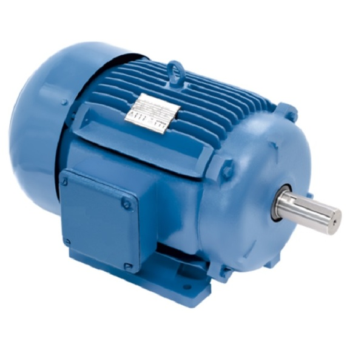

O Motor de Indução Trifásico é o grande responsável por transformar a energia elétrica que vem da rede em energia mecânica (movimento de rotação). Ele funciona com base nos princípios do eletromagnetismo: quando as três fases da rede elétrica alimentam as bobinas do estator (a parte fixa do motor), cria-se um campo magnético giratório. Esse campo magnético induz uma corrente elétrica na parte móvel (o rotor), gerando uma força magnética que faz o eixo central girar com muita força.

Existem dois tipos principais de MIT no mercado: o motor com rotor em gaiola de esquilo (que é o tipo mais utilizado no mundo devido à sua simplicidade construtiva e altíssima durabilidade) e o motor com rotor bobinado, que utiliza anéis coletores elétricos no eixo e é aplicado em situações específicas onde se necessita de um controle de partida muito pesado com alto torque, como em guindastes de grande porte.
Na indústria, ele é considerado o "músculo" dos processos produtivos, pois é extremamente robusto, eficiente e exige pouca manutenção. Suas aplicações são infinitas, destacando-se o acionamento de esteiras transportadoras, bombas d'água prediais e industriais, compressores de ar comprimido, exaustores e misturadores de grande porte.